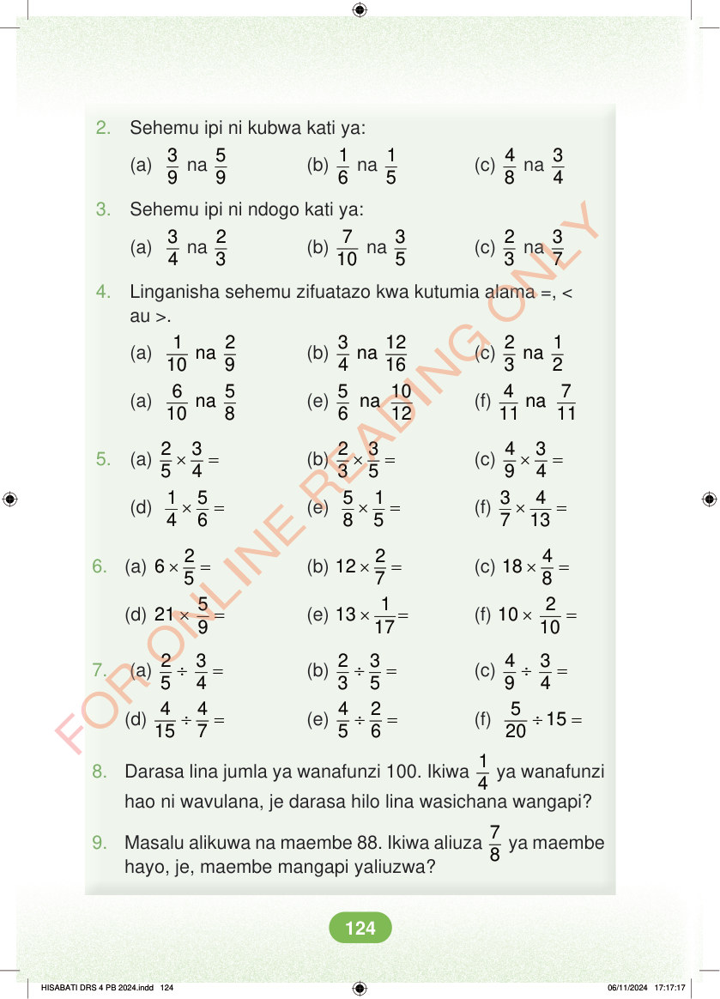

<!DOCTYPE html>
<html lang="sw-TZ"><head><meta charset="utf-8"><meta name="viewport" content="width=device-width,initial-scale=1">
<title>Hisabati: Kitabu cha Mwanafunzi Darasa la Nne</title>
<meta name="title-id" content="pg130_sec001"><meta name="page-section-id" content="136">
<link href="./content/tailwind_output.css" rel="stylesheet"><link href="./assets/libs/fontawesome/css/all.min.css" rel="stylesheet"><link href="./assets/fonts.css" rel="stylesheet">
<style>body{margin:0;background:#eef1ed}main{width:100%;display:flex;justify-content:center;padding:1rem 1rem 5rem;box-sizing:border-box}#content{width:100%;display:flex;justify-content:center}.pdf-page{position:relative;width:min(calc(100vw - 2rem),56rem);aspect-ratio:540.8980102539062/750.6610107421875;background:white;box-shadow:0 4px 24px #0002;overflow:hidden}.pdf-page img{position:absolute;inset:0;width:100%;height:100%;object-fit:fill}</style>
</head><body><main><h1 class="sr-only" id="page-heading">Ukurasa wa 130</h1><div id="content" class="opacity-0"><section role="article" data-section-type="pdf_accessible_page" data-section-id="pg130_sec001" aria-labelledby="page-heading" class="pdf-page"><p class="sr-only" data-id="pg130_gp001_tx001">2. Sehemu ipi ni kubwa kati ya: (a) 8 na 3 4 3 9 na 5 9 (b) 1 6 na 1 5 (c) 4 3. Sehemu ipi ni ndogo kati ya: (a) 3 na 3 7 3 4 na 2 3 (b) 7 10 na 3 5 (c) 2 4. Linganisha sehemu zifuatazo kwa kutumia alama =, &lt; au &gt;. (a) 1 2 na 10 9 (b) 3 12 na 4 16 (c) 2 1 na 3 2 (a) 6 5 na 10 8 (e) 5 10 na 6 12 (f) 4 7 na 11 11 5. (a) × = 2 3 5 4 (b) × = 2 3 3 5 (c) × = 4 3 9 4 (d) × = 1 5 4 6 (e) × = 5 1 8 5 (f) × = 3 4 7 13 6. (a) × = 2 6 5 (b) × = 2 12 7 (c) × = 4 18 8 (d) × = 5 21 9 (e) × = 1 13 17 (f) × = 2 10 10 7. (a) ÷ = 2 3 5 4 (b) ÷ = 2 3 3 5 (c) ÷ = 4 3 9 4 (d) ÷ = 4 4 15 7 (e) ÷ = 4 2 5 6 (f) ÷ = 5 15 20 8. Darasa lina jumla ya wanafunzi 100. Ikiwa 1 4 ya wanafunzi hao ni wavulana, je darasa hilo lina wasichana wangapi? 9. Masalu alikuwa na maembe 88. Ikiwa aliuza 7 8 ya maembe hayo, je, maembe mangapi yaliuzwa? HISABATI DRS 4 PB 2024.indd 124 HISABATI DRS 4 PB 2024.indd 124 06/11/2024 17:17:17 06/11/2024 17:17:17</p></section></div></main><div class="relative z-50" id="interface-container"></div><div class="relative z-50" id="nav-container"></div><script src="./assets/offline-preloader.js?v=audiofix-20260824-1"></script><script src="./assets/scorm.js"></script><script src="./assets/base.bundle.local.js?v=audiofix-20260824-1"></script></body></html>